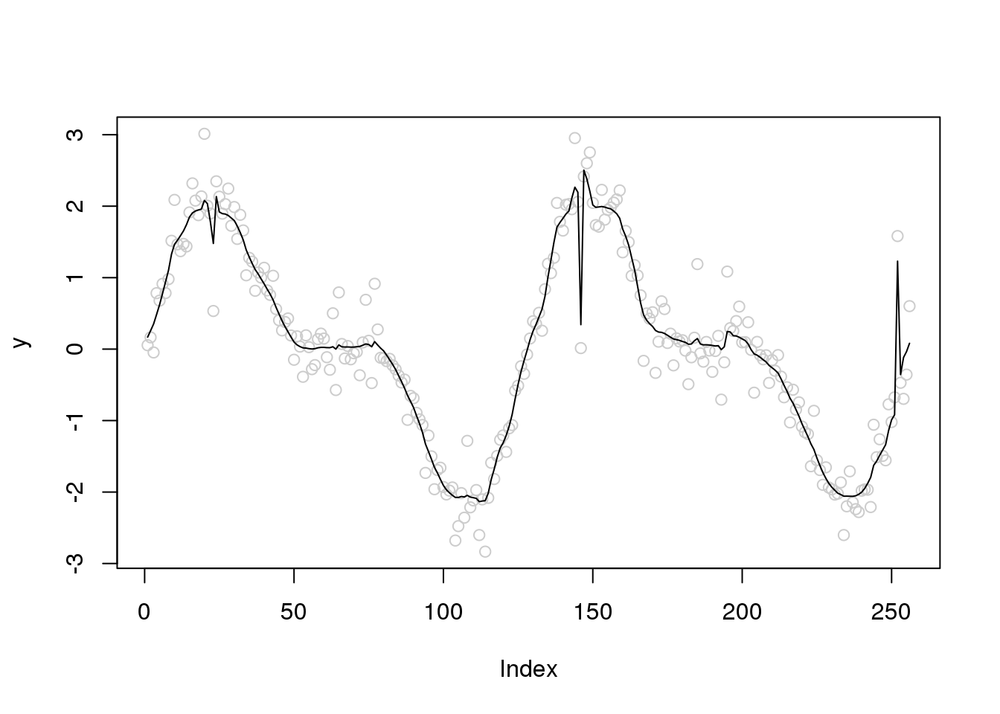
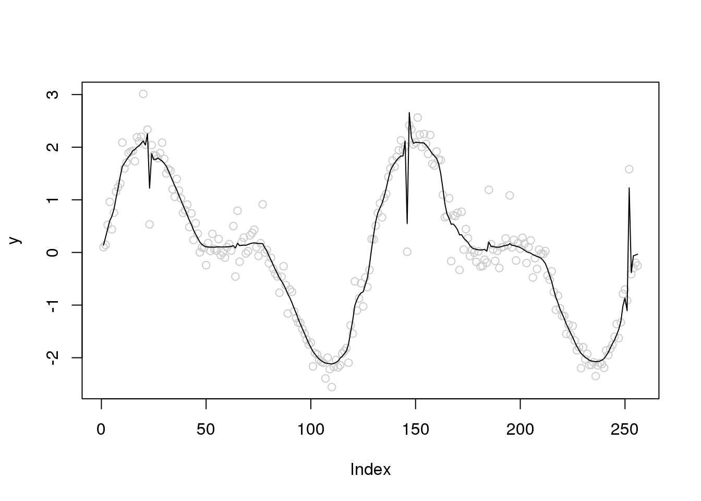
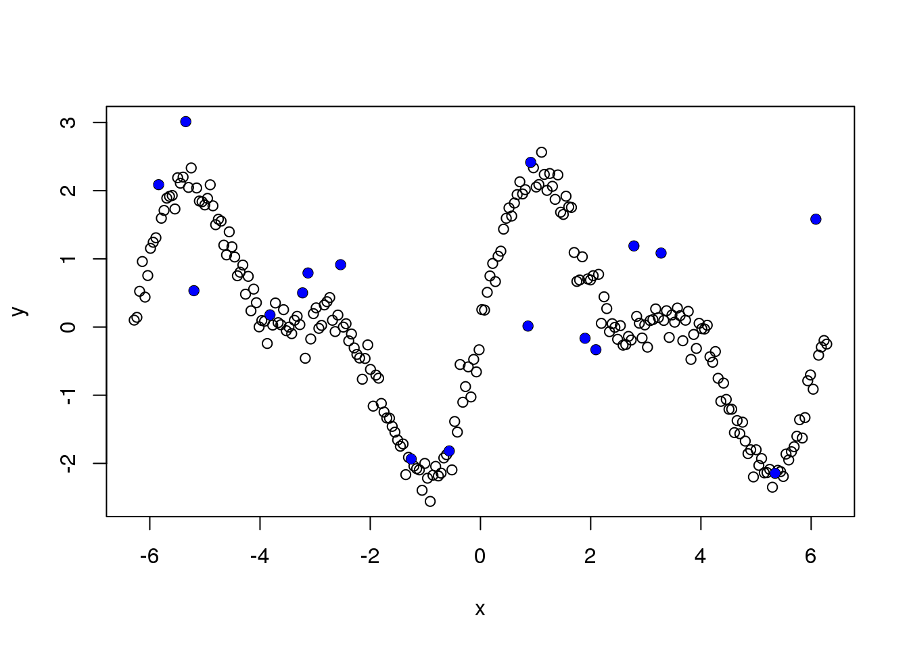
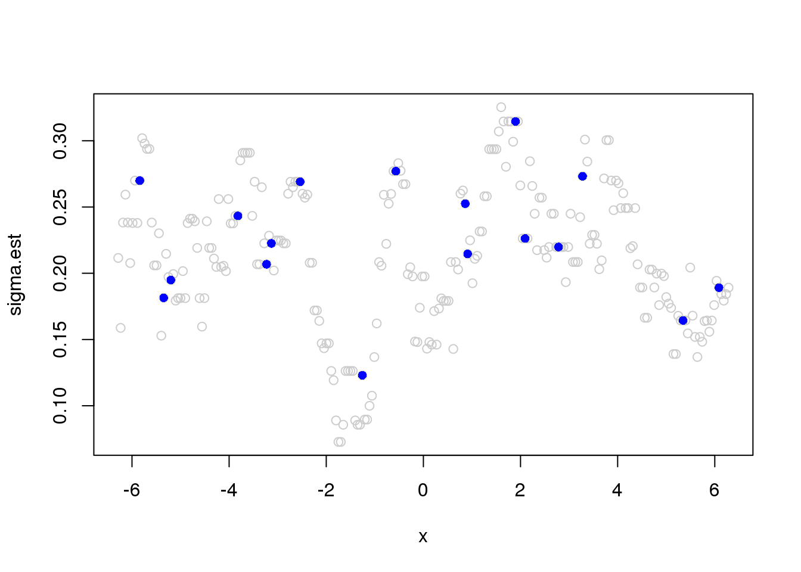
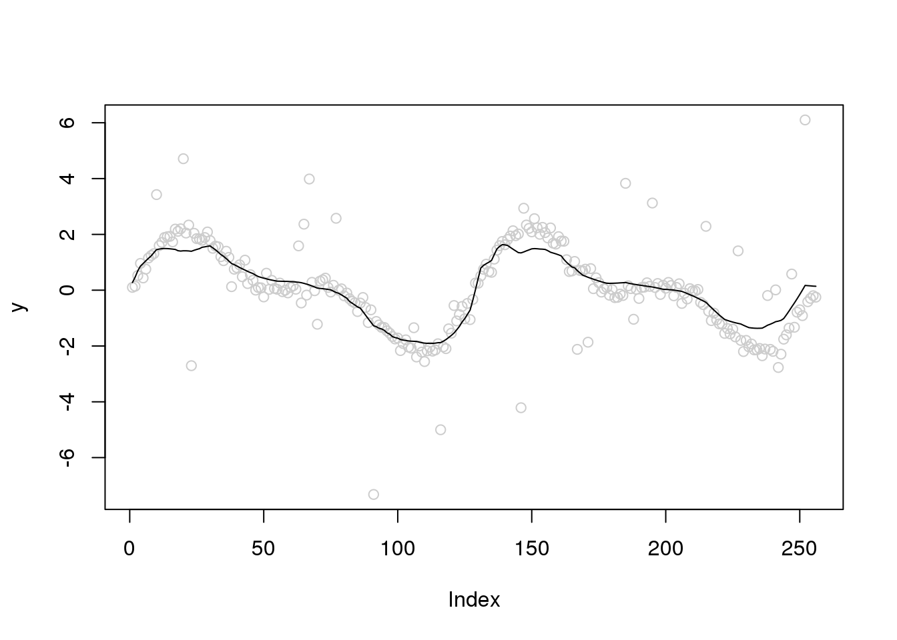

Outlier in Wavelet smoothing
Dongyue Xie
2020-02-01
Last updated: 2020-02-06
Checks: 7 0
Knit directory: SMF/
This reproducible R Markdown analysis was created with workflowr (version 1.5.0). The Checks tab describes the reproducibility checks that were applied when the results were created. The Past versions tab lists the development history.
Great! Since the R Markdown file has been committed to the Git repository, you know the exact version of the code that produced these results.
Great job! The global environment was empty. Objects defined in the global environment can affect the analysis in your R Markdown file in unknown ways. For reproduciblity it’s best to always run the code in an empty environment.
The command set.seed(20190719) was run prior to running the code in the R Markdown file. Setting a seed ensures that any results that rely on randomness, e.g. subsampling or permutations, are reproducible.
Great job! Recording the operating system, R version, and package versions is critical for reproducibility.
Nice! There were no cached chunks for this analysis, so you can be confident that you successfully produced the results during this run.
Great job! Using relative paths to the files within your workflowr project makes it easier to run your code on other machines.
Great! You are using Git for version control. Tracking code development and connecting the code version to the results is critical for reproducibility. The version displayed above was the version of the Git repository at the time these results were generated.
Note that you need to be careful to ensure that all relevant files for the analysis have been committed to Git prior to generating the results (you can use wflow_publish or wflow_git_commit). workflowr only checks the R Markdown file, but you know if there are other scripts or data files that it depends on. Below is the status of the Git repository when the results were generated:
Ignored files:
Ignored: .Rhistory
Ignored: .Rproj.user/
Untracked files:
Untracked: code/GTEx Splicing.R
Untracked: code/genome_annotation.R
Untracked: data/BMSM_k4_GA.RData
Untracked: data/GPX3_NMF_mkl_lee_K3.RData
Untracked: data/GPX3_stm_bmsm_K3.RData
Untracked: data/GPX3_stm_nugget_K3.RData
Untracked: data/PSAP_NMF_mkl_lee_K3.RData
Untracked: data/PSAP_NMF_mkl_lee_K4.RData
Untracked: data/PSAP_stm_nugget_K3.RData
Untracked: data/PSAP_stm_nugget_K4.RData
Untracked: data/RPS13_NMF_mkl_lee_K3.RData
Untracked: data/RPS13_stm_bmsm_K3.RData
Untracked: data/RPS13_stm_nugget_K3.RData
Untracked: data/RPS13_stm_smooth_K3.RData
Note that any generated files, e.g. HTML, png, CSS, etc., are not included in this status report because it is ok for generated content to have uncommitted changes.
These are the previous versions of the R Markdown and HTML files. If you’ve configured a remote Git repository (see ?wflow_git_remote), click on the hyperlinks in the table below to view them.
| File | Version | Author | Date | Message |
|---|---|---|---|---|
| Rmd | 19e537e | DongyueXie | 2020-02-06 | new outlier detection |
| html | b3b8386 | Dongyue Xie | 2020-02-02 | Build site. |
| Rmd | bce77fb | Dongyue Xie | 2020-02-02 | wflow_publish(“analysis/outlierWavelet.Rmd”) |
New method 02/05/2020
The methods I tried on 02/01/2020 has a problem that it also treats true signal as outliers. For example, in step funciton, true signals are jumps hence have large level \(J-1\) wavelet coefficients but apparently they are not outliers. If setting their variance large, the smoothing is oversmoothed.
Inspired by Kovac and Silverman(1998), we can firstly identify the outliers and then set their variance to a larger one.
Identify outliers: 1. apply running mad to \(J-1\) level wavelet coefficients and obtain \(\hat\sigma\); 2. apply running median to y. If the difference between data point and med is greate than 3*\(\hat\sigma\), then set its vairance to be \(J-1\) level wavelet coefficients or running mean.
Now let’s try some examples
set.seed(12345)
n = 256
x = seq(-2*pi,2*pi,length.out = n)
f = 1.5*sin(x) + sin(2*x)
e_z = rbinom(n,1,0.05)
e = e_z*rnorm(n,0,1) + (1-e_z)*rnorm(n,0,1/rgamma(10,5))
y = f+e
# identify outliers
library(caTools)
library(wavethresh)Loading required package: MASSWaveThresh: R wavelet software, release 4.6.8, installedCopyright Guy Nason and others 1993-2016Note: nlevels has been renamed to nlevelsWTJ = log(n,2)-1
x.w = wd(y, filter.number=1,family='DaubExPhase', type = "station")
win.size = 25
sigma.est = runmad(accessD(x.w, J - 1), win.size, endrule = "func")
outliers.idx = which(abs(y-runquantile(y,win.size,probs=0.5, endrule = "func"))>2.58*sigma.est)
# plot outliers
plot(y,col='grey80')
points(outliers.idx,y[outliers.idx],col=4,pch=16)
sigma.est[outliers.idx] = accessD(x.w, J - 1)[outliers.idx]
library(smashr)
| Version | Author | Date |
|---|---|---|
| b3b8386 | Dongyue Xie | 2020-02-02 |
plot(y,col='grey80')
lines(smash.gaus(y))
| Version | Author | Date |
|---|---|---|
| b3b8386 | Dongyue Xie | 2020-02-02 |
plot(y,col='grey80')
lines(smash.gaus(y,sigma.est),col=4)Introduction
Investigate how the outlier will influecne the wavelet smoothing and how to automatically account for outliers.
Generate outliers from Huber’s contamination model:
set.seed(12345)
n = 256
x = seq(-2*pi,2*pi,length.out = n)
f = 1.5*sin(x) + sin(2*x)
e_z = rbinom(n,1,0.05)
e = e_z*rnorm(n,0,1) + (1-e_z)*rnorm(n,0,0.2)
y = f+e
library(smashr)
out = smash.gaus(y)
plot(y,col='grey80')
lines(out)
| Version | Author | Date |
|---|---|---|
| b3b8386 | Dongyue Xie | 2020-02-02 |
plot(y,col='grey80')
lines(ti.thresh(y))Try robust scatter plot smoothing
plot(y,col='grey80')
lines(runmed(y,11))
| Version | Author | Date |
|---|---|---|
| b3b8386 | Dongyue Xie | 2020-02-02 |
Let’s see the outliers
plot(x,y)
points(x[which(e_z==1)],y[which(e_z==1)],pch=16,col=4)
| Version | Author | Date |
|---|---|---|
| b3b8386 | Dongyue Xie | 2020-02-02 |
Running mad estimate of variance:
library(wavethresh)
library(caTools)
J = log2(n)
x.w = wd(y, filter.number=1,family='DaubExPhase', type = "station")
win.size = 25
sigma.est = runmad(accessD(x.w, J - 1), win.size, endrule = "func")
plot(x,sigma.est,col='grey80')
points(x[which(e_z==1)],sigma.est[which(e_z==1)],pch=16,col=4)
| Version | Author | Date |
|---|---|---|
| b3b8386 | Dongyue Xie | 2020-02-02 |
plot(abs(y[which(e_z==1)] - f[which(e_z==1)]),sigma.est[which(e_z==1)])
abline(0,1)# reduce window size
win.size = 10
sigma.est = runmad(accessD(x.w, J - 1), win.size, endrule = "func")Warning in runmed(x, k): 'k' must be odd! Changing 'k' to 11plot(x,sigma.est,col='grey80')
points(x[which(e_z==1)],sigma.est[which(e_z==1)],pch=16,col=4)plot(abs(y[which(e_z==1)] - f[which(e_z==1)]),sigma.est[which(e_z==1)])
abline(0,1)plot(y,col='grey80')
lines(smash.gaus(y,sigma.est))#
win.size = 3
sigma.est = runmad(accessD(x.w, J - 1), win.size, endrule = "func")
plot(x,sigma.est,col='grey80')
points(x[which(e_z==1)],sigma.est[which(e_z==1)],pch=16,col=4)plot(abs(y[which(e_z==1)] - f[which(e_z==1)]),sigma.est[which(e_z==1)])
abline(0,1)plot(x,y,col='grey80')
lines(x,smash.gaus(y,sigma.est))
lines(x,f,col=4)Summary 1
can not achieve robustness via change running MAD window size
Let’s look at the finest level NDWT coefficients
plot(x,accessD(x.w, J - 1))
points(x[which(e_z==1)],accessD(x.w, J - 1)[which(e_z==1)],pch=16,col=4)
| Version | Author | Date |
|---|---|---|
| b3b8386 | Dongyue Xie | 2020-02-02 |
Let’s directly use the absolute deviation as the sigma.est. Much better….
plot(y,col='grey80')
lines(smash.gaus(y,abs(accessD(x.w, J - 1)-median(accessD(x.w, J - 1)))))
| Version | Author | Date |
|---|---|---|
| b3b8386 | Dongyue Xie | 2020-02-02 |
plot(y,col='grey80')
lines(ti.thresh(y,abs(accessD(x.w, J - 1)-median(accessD(x.w, J - 1)))))Let’s increase the number of outliers
set.seed(12345)
e_z = rbinom(n,1,0.1)
e = e_z*rnorm(n,0,1) + (1-e_z)*rnorm(n,0,0.2)
y = f+e
x.w = wd(y, filter.number=1,family='DaubExPhase', type = "station")plot(y,col='grey80')
lines(smash.gaus(y,abs(accessD(x.w, J - 1)-median(accessD(x.w, J - 1)))))
| Version | Author | Date |
|---|---|---|
| b3b8386 | Dongyue Xie | 2020-02-02 |
plot(y,col='grey80')
lines(ti.thresh(y,abs(accessD(x.w, J - 1)-median(accessD(x.w, J - 1)))))Let’s increase the variance of outliers
set.seed(12345)
e_z = rbinom(n,1,0.1)
e = e_z*rnorm(n,0,3) + (1-e_z)*rnorm(n,0,0.2)
y = f+e
x.w = wd(y, filter.number=1,family='DaubExPhase', type = "station")plot(y,col='grey80')
lines(smash.gaus(y,abs(accessD(x.w, J - 1)-median(accessD(x.w, J - 1)))))
| Version | Author | Date |
|---|---|---|
| b3b8386 | Dongyue Xie | 2020-02-02 |
plot(y,col='grey80')
lines(ti.thresh(y,abs(accessD(x.w, J - 1)-median(accessD(x.w, J - 1)))))
Let’s increase the variance of outliers and variance of random errors
set.seed(12345)
e_z = rbinom(n,1,0.1)
e = e_z*rnorm(n,0,4) + (1-e_z)*rnorm(n,0,1)
y = f+e
x.w = wd(y, filter.number=1,family='DaubExPhase', type = "station")plot(y,col='grey80')
lines(smash.gaus(y,abs(accessD(x.w, J - 1)-median(accessD(x.w, J - 1)))))
| Version | Author | Date |
|---|---|---|
| b3b8386 | Dongyue Xie | 2020-02-02 |
plot(y,col='grey80')
lines(ti.thresh(y,abs(accessD(x.w, J - 1)-median(accessD(x.w, J - 1)))))
| Version | Author | Date |
|---|---|---|
| b3b8386 | Dongyue Xie | 2020-02-02 |
Pseudo-data approach
http://stat.snu.ac.kr/heeseok/html/paper/robusttech.pdf
smooth_outlier = function(y,maxiter=10,tol=1e-4){
f_hat = ti.thresh(y)
niter = 1
while(niter<=maxiter){
niter = niter + 1
y_tilde = f_hat + tanh(y-f_hat)/2
f_hat_new = ti.thresh(y_tilde)
if(norm(f_hat-f_hat_new,'2')<=tol){
break
}else{
f_hat = f_hat_new
}
}
f_hat_new
}
plot(y,col='grey80')
lines(smooth_outlier(y))Too slow. Does not work well.
sessionInfo()R version 3.5.1 (2018-07-02)
Platform: x86_64-pc-linux-gnu (64-bit)
Running under: Scientific Linux 7.4 (Nitrogen)
Matrix products: default
BLAS/LAPACK: /software/openblas-0.2.19-el7-x86_64/lib/libopenblas_haswellp-r0.2.19.so
locale:
[1] LC_CTYPE=en_US.UTF-8 LC_NUMERIC=C
[3] LC_TIME=en_US.UTF-8 LC_COLLATE=en_US.UTF-8
[5] LC_MONETARY=en_US.UTF-8 LC_MESSAGES=en_US.UTF-8
[7] LC_PAPER=en_US.UTF-8 LC_NAME=C
[9] LC_ADDRESS=C LC_TELEPHONE=C
[11] LC_MEASUREMENT=en_US.UTF-8 LC_IDENTIFICATION=C
attached base packages:
[1] stats graphics grDevices utils datasets methods base
other attached packages:
[1] smashr_1.2-7 wavethresh_4.6.8 MASS_7.3-51.1 caTools_1.17.1.1
loaded via a namespace (and not attached):
[1] Rcpp_1.0.2 knitr_1.20 whisker_0.3-2
[4] magrittr_1.5 workflowr_1.5.0 pscl_1.5.2
[7] doParallel_1.0.14 SQUAREM_2017.10-1 lattice_0.20-38
[10] R6_2.3.0 foreach_1.4.4 ashr_2.2-39
[13] stringr_1.3.1 tools_3.5.1 parallel_3.5.1
[16] grid_3.5.1 data.table_1.12.0 git2r_0.26.1
[19] iterators_1.0.10 htmltools_0.3.6 yaml_2.2.0
[22] rprojroot_1.3-2 digest_0.6.18 mixsqp_0.2-2
[25] Matrix_1.2-15 later_0.7.5 codetools_0.2-15
[28] promises_1.0.1 fs_1.3.1 bitops_1.0-6
[31] glue_1.3.0 evaluate_0.12 rmarkdown_1.10
[34] stringi_1.2.4 compiler_3.5.1 backports_1.1.2
[37] truncnorm_1.0-8 httpuv_1.4.5